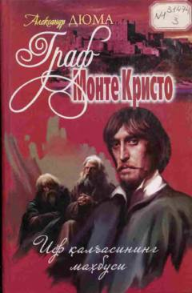

GMEdmon Dantesning sarguzashtlari va qasos yo'lidagi kurashiga bag'ishlangan mashhur roman.
Ushbu mashhur roman jahon adabiyotining eng sara asarlaridan biri bo'lib, bosh qahramon Edmon Dantesning uzoq yillik uqubatlari va qasos kurashi haqida hikoya qiladi. Asar insoniy tuyg'ular, adolatsizlik va uning oqibatlari haqidagi o'lmas g'oyalarni o'quvchiga taqdim etadi. Kitob o'quvchini ilk sahifalaroq o'ziga rom etib, sarguzashtlarga boy olamga yetaklaydi.